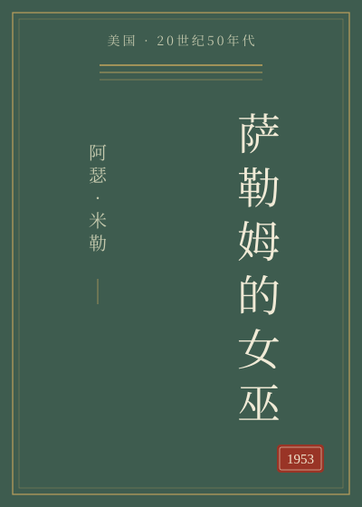
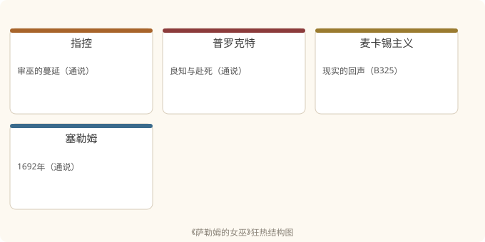

萨勒姆的女巫
一、基本信息
| 作者 | 阿瑟·米勒 |
|---|---|
| 成书/出版 | 1953年（Britannica B325：The Crucible (1953)——based on the Salem witch trials, seen as echoing McCarthyism；获Tony奖） Arthur Miller — Encyclopaedia Britannica（百科全书） |
| 国别/地区 | 美国 |
| 时代 | 现当代 · 20世纪50年代 |
| 体裁 | 戏剧 |
| 语言 | 英语 |

《萨勒姆的女巫》狂热结构图（主题·结构图）
二、创作背景
Britannica（B325）：The Crucible——以塞勒姆审巫案为题材，被视为对麦卡锡主义的回应（'based on the Salem witch trials, seen as echoing McCarthyism'）；获Tony奖。
作者页（B325）：米勒把'普通人'置于悲剧中心；本剧与其《推销员之死》（1949）为同一时期两大名作。
历史背景（通说待核）：1692年马萨诸塞州塞勒姆村审巫事件。
三、内容脉络
塞勒姆审巫事件：少女们的指控蔓延为猎巫狂潮（审巫史实细节通说待核——B325未载剧情）。
诚实者在拒绝诬告中赴死——个人良知与集体狂热（通说待核）。
四、主要人物表
| 人物 | 身份 | 说明 |
|---|---|---|
| 约翰·普罗克特 | 农夫 | （通说待核，B325未载） |
| 艾比盖尔 | 指控者 | （通说待核，B325未载） |
五、主题与艺术特点
- 审巫狂热与政治迫害的互文（B325：seen as echoing McCarthyism）。
- 个人良知对抗集体狂热（通说待核）。
- '名'与'命'：名声社会的道德困境（通说待核）。
六、影响与评论
- Britannica：The Crucible (1953) 获Tony奖（B325）。
Arthur Miller — Encyclopaedia Britannica（百科全书） - Britannica：被视为对麦卡锡主义的回应（B325）。
Arthur Miller — Encyclopaedia Britannica（百科全书）
七、阅读建议
难点
- 1692年塞勒姆审巫史。
- 清教社区语境。
- 《萨勒姆的女巫》（人民文学出版社《阿瑟·米勒戏剧集》等版本——通说待核）。
- 英文原版。
与《推销员之死》并读：米勒两大高峰。
八、待核实
- 约翰·普罗克特/艾比盖尔人名核对（B325未载）。
- 中译名两说（《萨勒姆的女巫》/《炼狱》）待核。
- 1953年首演细节（Martin Beck Theatre说）待核。